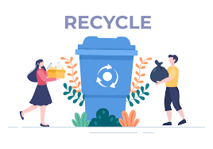
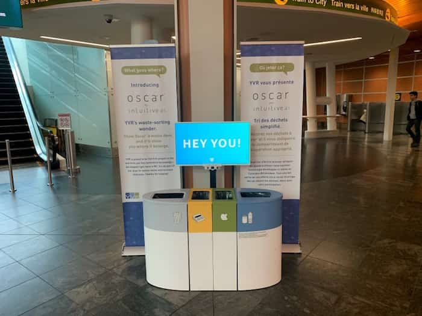
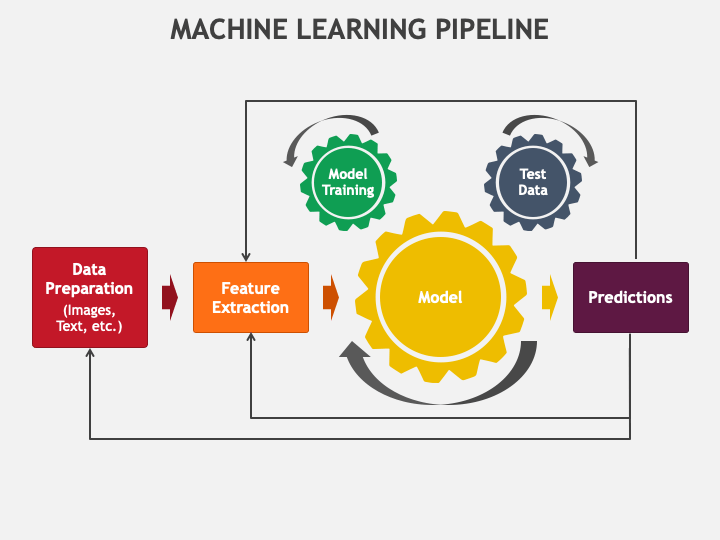

During a recent visit to Vancouver International Airport (YVR), I was impressed by the camera scanner system at the waste bins. It automatically classified the waste I was about to dispose of into categories such as garbage, plastic, or organics. This sparked an idea: Could I build a similar AI-powered system to help enhance waste sorting in various environments? That is exactly what I did the very next day.
Project Overview
I embarked on a journey to develop a waste classification system using deep learning, specifically leveraging a pre-trained ResNet34 model. The goal was to create a full end-to-end pipeline that could accurately classify waste into different categories, helping users to sort their waste more effectively and contribute to reducing contamination in recycling streams.

Choosing ResNet34 for the Task
ResNet34, a widely-used architecture in the field of computer vision, is known for its ability to handle the complexities of image classification. By fine-tuning this model, I aimed to adapt it to the specific task of waste classification, even with a limited dataset.
The Process: From Notebook to Usable Script
Environment Setup
The project began with setting up the necessary environment. Using PyTorch, I ensured that the appropriate libraries were installed and CUDA was available for GPU acceleration. This setup was critical for speeding up the model training process.
Data Preparation and Augmentation
I started by preparing the dataset, which included images of various waste items like plastics, organics, and general garbage. The images were preprocessed using transformations such as resizing, normalization, and data augmentation. These techniques included random rotations, flips, and color jittering to increase the diversity of the training data, thereby improving the model’s generalization capability.
Here’s a snippet of the code used for data transformations:
transform = transforms.Compose([ transforms.Resize((224, 224)), transforms.RandomHorizontalFlip(), transforms.RandomRotation(10), transforms.ColorJitter(brightness=0.2, contrast=0.2, saturation=0.2, hue=0.2), transforms.ToTensor(), transforms.Normalize([0.485, 0.456, 0.406], [0.229, 0.224, 0.225]) ])Fine-Tuning the ResNet34 Model
Next, I moved on to fine-tuning the ResNet34 model. The pre-trained ResNet34 model, which was originally trained on the ImageNet dataset, was adapted to classify waste. This involved:
- Replacing the final fully connected layer to match the number of waste - categories.
- Freezing the earlier layers of the model to retain the pre-trained weights.
- Fine-tuning the last two layers to adapt the model to the specific task.
# Load the pre-trained ResNet34 model model = models.resnet34(pretrained=True) # Modify the final layer for the specific task num_ftrs = model.fc.in_features model.fc = nn.Linear(num_ftrs, num_classes) # num_classes represents the waste categories # Freeze all layers except the last two for param in model.parameters(): param.requires_grad = False for param in model.layer4.parameters(): param.requires_grad = True # Define the loss function and optimizer criterion = nn.CrossEntropyLoss() optimizer = optim.Adam(model.fc.parameters(), lr=0.001)Training and Evaluation
I then proceeded to train the model using the prepared dataset. The training process involved multiple epochs, where the model’s performance was continuously monitored on the validation set. The training loop included the following steps:
Forward pass: The model made predictions on the input data.
Backward pass: The loss was computed, and gradients were calculated.
Optimization: The model’s weights were updated to minimize the loss.
# Training loop for epoch in range(num_epochs): model.train() running_loss = 0.0 for images, labels in train_loader: optimizer.zero_grad() outputs = model(images) loss = criterion(outputs, labels) loss.backward() optimizer.step() running_loss += loss.item() print(f'Epoch {epoch+1}/{num_epochs}, Loss: {running_loss/len(train_loader)}') # Evaluate the model model.eval() accuracy = 0.0 with torch.no_grad(): for images, labels in val_loader: outputs = model(images) _, preds = torch.max(outputs, 1) accuracy += torch.sum(preds == labels.data).item() accuracy = accuracy / len(val_loader.dataset) print(f'Validation Accuracy: {accuracy * 100:.2f}%')
- Building an End-to-End Pipeline
To make the workflow efficient and reproducible, I developed an ETL (Extract, Transform, Load) pipeline, automating the key steps of data extraction, transformation, model training, evaluation, and prediction. This pipeline was encapsulated into a series of scripts, each handling a specific stage of the process.

- Data Extraction: Downloading Data from Kaggle
The first step in the pipeline was to extract the dataset. I used the Kaggle API to download the necessary waste classification dataset. By automating this process, I ensured that the latest data could always be accessed and used for model training. This script authenticates with Kaggle using the API, downloads the specified dataset, and extracts it to a designated directory.
- Data Transformation and Model Training
After downloading the dataset, the next step was to transform the data and train the model. The transformation process involved image resizing, normalization, and augmentation to prepare the data for training. The training script used PyTorch to fine-tune a ResNet34 model on the transformed dataset. This script automates the model training process, from loading the dataset to saving the trained model. It can be executed with minimal setup, making it easy to retrain the model as needed.
- Model Evaluation
Once the model was trained, I needed to evaluate its performance on unseen data. The evaluation script loads the trained model and runs it against a validation dataset to assess its accuracy and other metrics. This script ensures that the model’s performance is quantified and can be used to decide whether further training or tuning is required.
- Prediction: Classifying New Waste Images
The final stage of the pipeline involves using the trained model to classify new images. This script takes an image as input, preprocesses it, and outputs the predicted waste category. This script allows users to input a new image, and the model will output the corresponding waste category. It’s a straightforward yet powerful tool that can be easily integrated into a larger waste management system.
Conclusion
This project began as a curiosity sparked by an AI system at an airport and evolved into a comprehensive waste classification pipeline. By fine-tuning a ResNet34 model, I developed a robust classifier that can assist in sorting waste more effectively. This project not only contributes to environmental sustainability but also showcases the power of AI in solving real-world problems.
The end-to-end pipeline I created can be easily deployed in various settings, from airports to office buildings, making it a versatile tool for improving waste management practices. With further refinements and a larger dataset, this system could play a significant role in reducing waste contamination and promoting a cleaner, more sustainable world.
Citation
@online{voon2024,
author = {Voon, Sharon},
title = {Waste {Classification} with {AI}},
date = {2024-09-03},
url = {https://s-voon.github.io/blogs/waste_classification/},
langid = {en}
}